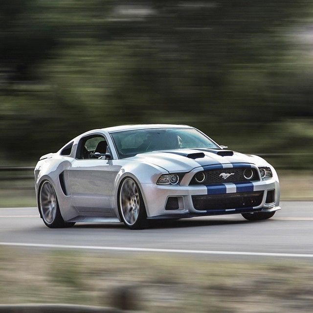
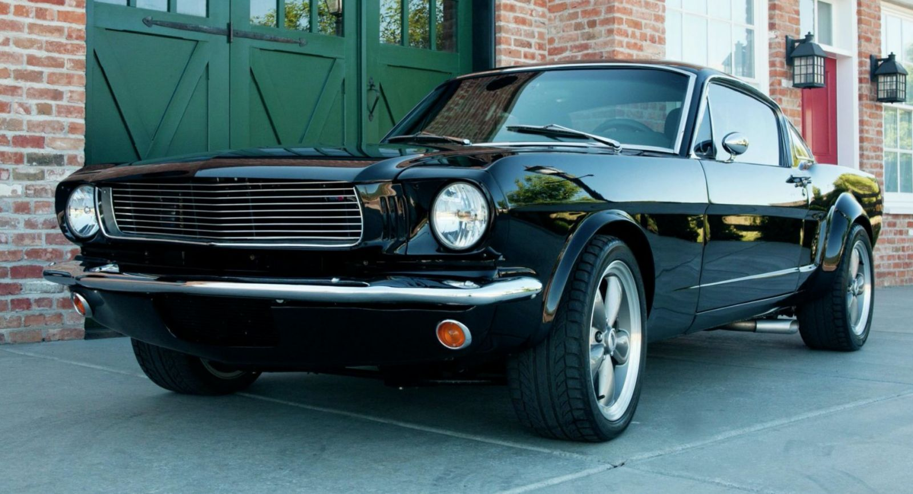

El Ford Mustang: Una Leyenda en la Historia del Automóvil
Primer Ford Mustang (1964)
El primer Ford Mustang fue lanzado en 1964, conocido como el Mustang de 1964½. Este modelo dio inicio a una de las líneas de automóviles más icónicas en la historia del motor.
El Mustang original tenía un diseño deportivo que lo hacía asequible para el público joven y una gran variedad de opciones de personalización que lo convirtieron en un éxito inmediato. Era conocido por su versatilidad y por ser un coche que ofrecía un buen rendimiento a un precio razonable.
Mustang de la Película "Need for Speed"
El Ford Mustang que aparece en la película "Need for Speed" (2014) es un modelo especialmente modificado que se utilizó para escenas de gran velocidad y acción.

Este Mustang fue equipado con un motor más potente, mejoras aerodinámicas, y un diseño visual agresivo para captar la atención de los fans. La película ayudó a revitalizar el interés por el Mustang y a reforzar su imagen como un coche de alto rendimiento.
Mustangs de Famosos
El Ford Mustang ha sido el coche preferido de muchas celebridades, desde actores hasta músicos y atletas.
Este es el Ford Mustang FR500C de Patrick Dempsey. El es un famoso actor y piloto de carreras estadounidense.

Por ejemplo, el famoso actor Steve McQueen condujo un Mustang GT 390 Fastback en la película "Bullitt" (1968), que se convirtió en uno de los Mustangs más icónicos de todos los tiempos.
Mustangs Modificados
El Ford Mustang también se ha ganado un lugar especial entre los entusiastas de las modificaciones. Existen muchas versiones personalizadas que llevan al Mustang al siguiente nivel.
Los Mustangs modificados pueden incluir mejoras en el motor, suspensión y diseño visual, transformándolo en un coche único en las carreteras y en las pistas de carreras.

.jpeg)